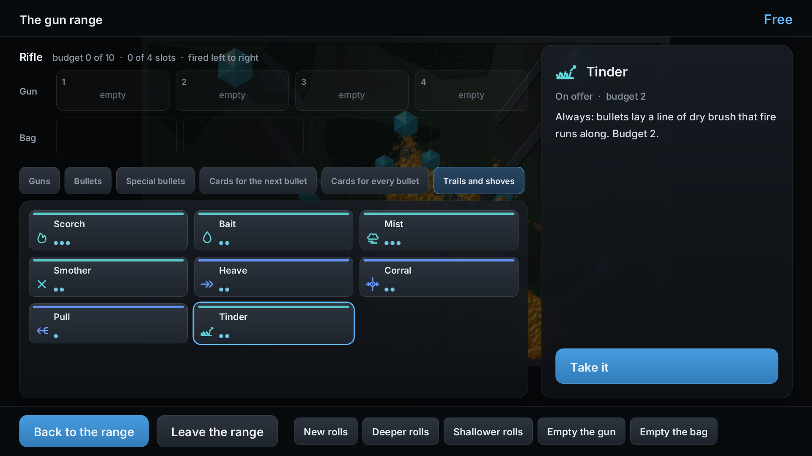

<title>Tinder Bullets</title>
<meta name="claude:viewport-fit-sides" content="cover">
<link rel="stylesheet" href="https://fonts.googleapis.com/css2?family=Chakra+Petch:wght@600;700&family=IBM+Plex+Sans:wght@400;600&family=IBM+Plex+Mono:wght@400;500&display=swap">
<style>
/* Same system as the Mind, reader, route and element pages. Accents: the brush's dry straw, the heat flag's ember red. */
:root{
  --bg:#eef0ee; --panel:#e0e4e1; --fg:#161a19; --muted:#56605c; --line:#c5cbc7;
  --torch:#a86400; --heat:#b3361f; --crystal:#137f95; --good:#3f7a00;
  --display:"Chakra Petch","Segoe UI",system-ui,sans-serif;
  --body:"IBM Plex Sans","Segoe UI",system-ui,sans-serif;
  --mono:"IBM Plex Mono",ui-monospace,Consolas,monospace;
}
@media (prefers-color-scheme: dark){:root:not([data-theme="light"]){
  --bg:#101413; --panel:#1a201e; --fg:#e8ece9; --muted:#9aa5a0; --line:#2b3330;
  --torch:#ffd23a; --heat:#ff7a5c; --crystal:#5fd0e3; --good:#b6f05a; color-scheme:dark}}
:root[data-theme="dark"]{
  --bg:#101413; --panel:#1a201e; --fg:#e8ece9; --muted:#9aa5a0; --line:#2b3330;
  --torch:#ffd23a; --heat:#ff7a5c; --crystal:#5fd0e3; --good:#b6f05a; color-scheme:dark}
body{background:var(--bg);color:var(--fg);font:16.5px/1.55 var(--body);
  padding-left:max(16px,env(safe-area-inset-left,0px));padding-right:max(16px,env(safe-area-inset-right,0px));padding-block:28px 64px}
main{max-width:1180px;margin:0 auto;display:flex;flex-direction:column;gap:34px}
h1,h2,h3{font-family:var(--display);text-wrap:balance;line-height:1.12;margin:0;letter-spacing:.01em}
h1{font-size:2.5rem;font-weight:700}
h2{font-size:1.5rem;font-weight:700}
h3{font-size:1.1rem;font-weight:700}
p{margin:0;max-width:70ch}
section{display:flex;flex-direction:column;gap:14px}
.eyebrow{font:12px/1 var(--mono);letter-spacing:.1em;text-transform:uppercase;color:var(--muted)}
.lede{color:var(--muted);font-size:1.04rem;max-width:70ch}
ul{margin:0;padding-left:1.2em;display:flex;flex-direction:column;gap:8px;max-width:74ch}
li{min-width:0}
code{font:.86em var(--mono);background:var(--panel);padding:1px 4px;border-radius:3px}
.bar{display:flex;flex-wrap:wrap;gap:10px;align-items:center}
button{font:600 14px var(--body);color:var(--fg);background:var(--panel);border:1px solid var(--line);border-radius:6px;padding:7px 12px;cursor:pointer}
button[aria-pressed="true"]{background:var(--fg);color:var(--bg);border-color:var(--fg)}
button:focus-visible{outline:2px solid var(--crystal);outline-offset:2px}
.hint{font-size:.9rem;color:var(--muted)}
.pair{display:grid;grid-template-columns:repeat(2,1fr);gap:14px}
@media (max-width:760px){.pair{grid-template-columns:1fr}}
figure{margin:0;display:flex;flex-direction:column;gap:6px;min-width:0}
video{width:100%;max-width:100%;aspect-ratio:960/456;border-radius:6px;border:1px solid var(--line);background:#000;display:block}
img.still{width:100%;max-width:100%;border-radius:6px;border:1px solid var(--line);display:block}
.tag{font:500 12px/1 var(--mono);letter-spacing:.08em;text-transform:uppercase;color:var(--muted)}
.torch .tag.on,.torch h2 .k,.torch h3 .k{color:var(--torch)}
.heat .tag.on,.heat h2 .k,.heat h3 .k{color:var(--heat)}
figcaption{font-size:.92rem;color:var(--muted)}
.counts{font:12.5px/1.55 var(--mono);color:var(--fg);background:var(--panel);padding:7px 10px;border-radius:6px;overflow-x:auto;white-space:pre}
.short{background:var(--panel);border-radius:8px;padding:18px 20px;display:flex;flex-direction:column;gap:10px}
.wrap{overflow-x:auto;max-width:100%}
table{border-collapse:collapse;font:13px/1.45 var(--mono);min-width:560px}
th,td{padding:5px 10px;border-bottom:1px solid var(--line);text-align:right;white-space:nowrap}
th:first-child,td:first-child{text-align:left}
thead th{font:600 12px var(--body);color:var(--muted)}
tbody tr:last-child td{border-bottom:none}
td.up{color:var(--good);font-weight:500}
.note{border-left:3px solid var(--torch);padding:4px 0 4px 14px}
.heat .note{border-left-color:var(--heat)}
footer{font-size:.85rem;color:var(--muted)}
</style>
<main>
<header style="display:flex;flex-direction:column;gap:10px">
  <span class="eyebrow">Larder World · guns · step D · 2026-11-17</span>
  <h1>Element bullets: Tinder</h1>
  <p class="lede">The element family's second card. Tinder kills nothing. Every bullet lays a strip of dry brush along its flight, and a fire runs along it, so a squad can draw where a fire goes, even on ground where plants are too thin to carry one. The game designer also asked for a test before Tinder could ship: with a lit Tinder line between the slime and its food, does heat in the sensors make the line a fence?</p>
</header>

<div class="bar">
  <button id="slow" type="button" aria-pressed="false">Slow motion ×½</button>
  <span class="hint">Each clip loops at real speed, 10 frames a game second, in the near view.</span>
</div>

<section class="torch">
  <h2><span class="k">Tinder</span> in play, on the barrens</h2>
  <p>Planet 2:1, the barrens, where plants are sparse scrub. One game played to 25 s, then every squad loads torch bullets, either alone or with Tinder, for 10 s. The torch lights plants within 6 cells of its hit. With Tinder, the brush along each flight carries that fire along the line and into the slime. The brush is never laid within 6 cells of a soldier.</p>
  <div class="pair">
    <figure><span class="tag">Torch</span><video src="play-torch.mp4" autoplay muted loop playsinline></video>
      <div class="counts">window 25 to 35 s
killed        49 (3 by fire)
slime at 35 s 24,721
soldiers      8 of 8</div></figure>
    <figure><span class="tag on">Torch + Tinder</span><video src="play-tinder-torch.mp4" autoplay muted loop playsinline></video>
      <div class="counts">window 25 to 35 s
killed        78 (38 by fire)
slime at 35 s 24,693
soldiers      8 of 8 · 98 brush discs laid</div></figure>
  </div>
</section>

<section>
  <h2>In play: paired 10 s windows</h2>
  <p>The same planet scenes as the Torch's page: planets 1 to 3, guarding or squad-mode hands, windows at 25 and 40 s. Each plays one game to that time, then every squad loads a deck and fights for 10 s. Kills per variant:</p>
  <div class="wrap"><table>
    <thead><tr><th>Planet</th><th>Windows</th><th>torch</th><th>torch + tinder</th><th>scorch</th><th>scorch + tinder</th><th>plain</th></tr></thead>
    <tbody>
      <tr><td>1, meadow</td><td>6</td><td>350</td><td class="up">391</td><td>381</td><td>369</td><td>230</td></tr>
      <tr><td>2, barrens</td><td>2</td><td>123</td><td class="up">159</td><td>162</td><td>157</td><td>117</td></tr>
      <tr><td>3, fen</td><td>2</td><td>18</td><td>19</td><td>20</td><td>16</td><td>11</td></tr>
      <tr><td>all</td><td>10</td><td>491</td><td class="up">569</td><td>563</td><td>542</td><td>358</td></tr>
      <tr><td>by fire</td><td></td><td>233</td><td>382</td><td>114</td><td>192</td><td>0</td></tr>
    </tbody>
  </table></div>
  <ul>
    <li><b>With the torch, Tinder kills more than the torch alone</b> in all 9 windows that had kills, and leaves less slime at the end in all 9 (p 0.004 each). That holds after correcting for the six comparisons. The gain is all fire.</li>
    <li><b>It matters most where plants are thin.</b> On the barrens it took 159 against 123. On the meadow, where the grass already carries the torch's fire, it was 391 against 350.</li>
    <li><b>It adds nothing to the scorch trail</b> (more kills in 3 of 9, fewer in 6). The scorch already burns its own line, and the fire on the brush takes what the scorch would have burned.</li>
    <li><b>No soldier was lost.</b> The first build laid brush from the muzzle, and every fire ran back along it to the squad. It lost 23 of 80 soldiers over the ten windows, and some windows ended with 2 of 8. The brush now stays 6 cells clear of every soldier.</li>
    <li>A note for the balance pass: the two cards cost 4 of the gun's budget and beat the blast (3) in 9 of 9. Nothing is retuned here.</li>
  </ul>
</section>

<section class="heat">
  <h2>The crossing test: is a fire line a fence?</h2>
  <p>The designer's test, on one seed. On planet 1:3, from 16 s a stream of walkers runs from the slime by the big crystal to the crystals across the meadow. At 16 s a 40-unit Tinder line is laid across the stream and lit along its whole length. We count the walkers that cross it between 16 and 45 s. Heat in the sensors (<code>fire_weight</code>) makes walkers turn away from fire. The designer's rule was: turn it on if it cuts crossings clearly and the body flows around the line, and leave it off if it only holds the slime in the flames.</p>
  <div class="pair">
    <figure><span class="tag">No line</span><video src="none.mp4" autoplay muted loop playsinline></video>
      <div class="counts">crossed 16 to 45 s   214
killed by fire       0</div></figure>
    <figure><span class="tag on">Lit line, heat weight 0 (today)</span><video src="heat-0.mp4" autoplay muted loop playsinline></video>
      <div class="counts">crossed 16 to 45 s   10 (all by 30 s)
killed by fire       119
cells burning        526 at 22 s · 255 at 40 s · 87 at 45 s</div></figure>
    <figure><span class="tag on">Lit line, heat weight −5</span><video src="heat-5.mp4" autoplay muted loop playsinline></video>
      <div class="counts">crossed 16 to 45 s   57
  while it burned (to 40 s)   4
  as it died (41 to 45 s)     53
killed by fire       44</div></figure>
    <figure><span class="tag on">Lit line, fire alarm 50</span><video src="alarm-50.mp4" autoplay muted loop playsinline></video>
      <div class="counts">crossed 16 to 45 s   31
  while it burned (to 41 s)   0
  as it died (42 to 45 s)     31
killed by fire       28</div></figure>
  </div>
  <p class="note">With the weight at 0 the stream walks into the flames: 119 burn, 10 get across, and nothing comes after. With the weight at −5 the stream stops at the fire's edge and waits. Fewer burn, but when the fire dies at about 40 s, 53 cross the char in 5 seconds. It never flows round the ends of the line. That isn't a fence, so <b>heat in the sensors stays off</b>. The simulation-use thread asked for a third arm with its fire alarm switch (<code>fire_alarm</code> 50, which feeds the slime's flinch). It held the stream better while the fire burned (0 crossed, 28 burned), and then the stream crossed the char the same way (31). With either switch, a fire is a wall only while it burns. A fence would need a fire that lasts, or ground that stays scorched.</p>
</section>

<section class="torch">
  <h2>In the game</h2>
  <p>Tinder costs 2 of the gun's budget and is sold from planet 2. It sits with the other trails. The shove cards share that tab now, "Trails and shoves", because a seventh tab cut the tab row off at large UI sizes. Laid brush withers back to the ground in under a minute.</p>
  <figure>
    <figcaption>The armory at 1920×1080. Tinder's icon is a row of dry stalks along a line, with a bullet at its end.</figcaption></figure>
</section>

<section class="short">
  <h2>Not settled</h2>
  <ul>
    <li><b>The crossing test</b> is one scene and one seed, as the designer asked.</li>
    <li><b>Frame cost.</b> Nothing while Tinder is unused. Each brush disc is one pass of the fire-lighting shader over the dish (three discs a pass), as the scorch trail's lights already are. It has not been timed on the GTX 1070.</li>
    <li><b>Next in step D:</b> force, then cut last. Douse (water) is still held.</li>
  </ul>
</section>

<footer>Source, clips and counts: <code>Reports/gun-tinder-2026-11-17/</code> in the repo. Crossing clips by <code>raw/film.sh</code>, play clips by <code>raw/play.sh</code>, both by <code>raw/make_clips.py</code> (counts in <code>raw/counts.json</code>); windows by <code>raw/windows.sh</code> (tables in <code>raw/windows.txt</code>, <code>raw/windows-nogap.txt</code> and <code>raw/windows-alonggap.txt</code>).</footer>
</main>
<script>
(function(){
  var b=document.getElementById('slow');
  function set(on){
    b.setAttribute('aria-pressed',on?'true':'false');
    document.querySelectorAll('video').forEach(function(v){v.playbackRate=on?0.5:1;});
  }
  b.addEventListener('click',function(){set(b.getAttribute('aria-pressed')!=='true');});
})();
</script>
